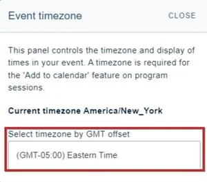
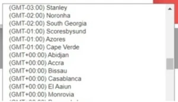

Setting up your program - timezones
Follow the guidance below to set up your timezone.#
Go to Event dashboard → Conference →Builder → Settings ➞ Timezone**
The guidance below is for event administrators/ organisers. If you are an end user (eg. submitter, reviewer, delegate etc), please click here.
NB: Your delegates will set their own time zones. See here for how this is done.
The Event timezone panel will appear.
Begin by setting your timezone. Click in the field below.

This will reveal a dropdown list of all timezones. Select the one you require.

Please note:
We display a standard list of times that doesn't change in the program builder, so if a country is in summer time then we display the non-summertime timezone in the dropdown.
This is because an event can be at any time of the year, even potentially moving across the date boundary of summer time/standard time.
If you would like your conference to be asynchronous, please follow the guidance above and then hide your time / date display.
Did this page solve it?
Thanks — this helps us fix it.
Didn't solve it? Ask our support team
No question is too small, and there's no charge for asking. Raise a ticket and someone who knows the software will pick it up.